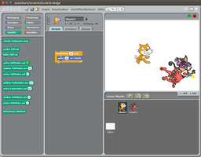
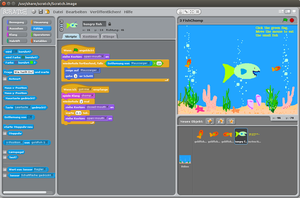
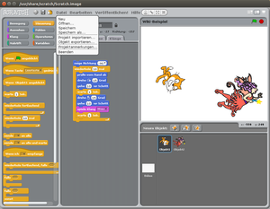

Scratch
Dieser Artikel wurde für die folgenden Ubuntu-Versionen getestet:
Ubuntu 14.04 Trusty Tahr
Zum Verständnis dieses Artikels sind folgende Seiten hilfreich:
 Scratch
Scratch  ist eine erstmals 2007 veröffentlichte erziehungsorientierte visuelle Programmiersprache für Kinder, Jugendliche sowie Anfänger inklusive ihrer Entwicklungsumgebung und der eng verknüpften Online-Community-Plattform. Eine Besonderheit ist auch dessen gute Lokalisierung, so dass die verwendeten Bausteine auch alle in deutscher Sprache verfügbar sind, was für Programmiersprachen eher unüblich ist.
ist eine erstmals 2007 veröffentlichte erziehungsorientierte visuelle Programmiersprache für Kinder, Jugendliche sowie Anfänger inklusive ihrer Entwicklungsumgebung und der eng verknüpften Online-Community-Plattform. Eine Besonderheit ist auch dessen gute Lokalisierung, so dass die verwendeten Bausteine auch alle in deutscher Sprache verfügbar sind, was für Programmiersprachen eher unüblich ist.
Es basiert auf der virtuellen Maschine Squeak, welche auch ähnliche Projekte starten kann, wie beispielsweise Snap! oder S4A, eine Scratch-Modifikation, die eine Programmierumgebung im Scratch-Design für den Arduino-Mikrocontroller zur Verfügung stellt. Ein durch Scratch beeinflusstes, ähnliches Projekt ist Etoys  .
.
|  |
| Bedienoberfläche Scratch 1.4 |
Scratch wird weltweit in Schulen und für Nicht-Informatiker sogar teilweise an Universitäten eingesetzt. Es gibt aber auch eine ausgeprägte Kultur des Remixens vorhandener Projekte. Die Vorteile liegen auf der Hand: Anfänger können spielerisch mit Bausteinen intuitiv Programmieren lernen. Durch diese Orientierung auf visuelle Objekte werden Syntaxfehler verhindert. Dies wird dadurch verbessert, dass auch nur logisch zueinander passende Bausteine miteinander verbunden werden können.
Des Weiteren ist Scratch eine der beiden offiziellen Programmiersprachen für den Raspberry Pi.
Installation¶
Aus den Paketquellen¶
Scratch ist bei Ubuntu - und auch bei Edubuntu - nicht vorinstalliert, kann aber bequem aus den Quellen installiert werden.
scratch (universe)
 mit apturl
mit apturl
Paketliste zum Kopieren:
sudo apt-get install scratch
sudo aptitude install scratch
Online-Version 2.0¶
Ab der Adobe Flash-basierten Version 2.0 kann man das Programm auch auf der offiziellen Internetseite scratch.mit.edu ausprobieren sowie Beispiele ansehen, testen und verändern. Voraussetzung dafür ist die Installation von Adobe Flash. Auch ohne Anmeldung lassen sich Projekte mit "Datei → Herunterladen auf deinen Computer" auf dem eigenen Computer speichern und zur weiteren Verwendung wieder mit "Datei → Hochladen von deinem Computer" hochladen.
Aufbau¶
Bereits der Aufbau ist recht einfach. Das Fenster ist in vier Bereiche unterteilt. In der Mitte im Bereich "Skripte" befindet sich das Programm an sich, links davon die Auswahl an Bausteinen, rechts davon die sogenannte Bühne mit dem Ablauf des Programms. Rechts unten sind die Bühnenobjekte aufgelistet. Standardmäßig ist das eine Katze.
Bedienung¶
|  |
| "Hungrige Fische" aus den Beispielprojekten |
Als Beispiel-Objekt ist eine Katze vorkonfiguriert. Die Erklärungen beziehen sich stets auf das Beispielbild vom Programm am Anfang des Artikels. Die Grundzüge der Bedienung sind sehr leicht verständlich, so dass sich bereits innerhalb kürzester Zeit erste Ergebnisse erzielen lassen. Das erste einfache Programm ist bereits in der Vergrößerung des Bildes zu erkennen - es ist nicht das bekannte "Hello World!".
Wenn man bei den Bühnenobjekten hinter "Neues Objekt" auf das Fragezeichen klickt, entsteht ein neues Zufallsobjekt (vergleiche mit dem ersten Bild). Wenn man einen Programmablauf für Handlungen der Katze schreiben will, muss man nun zunächst wieder das Objekt Katze durch Klick aktivieren.
Wichtig ist, dass man die verschiedenen Objekte im Fenster rechts unten auswählt, um deren Skripte sehen zu können. Des Weiteren sind Startwerte eine wichtige Eigenschaft von Programmen oder Programmbestandteilen. Im letzten Bild kann man sich den Startwert "zeige Richtung -90" (Grad) ansehen, welcher dafür sorgt, dass das Objekt (die Katze) vor Programmstart immer zuerst in die Laufrichtung Links ausgerichtet wird. Egal, wohin sie sich im Laufe des Programmes verläuft, sie wird immer wieder geradegedreht.
Auch die Startposition des Objektes könnte man so zurücksetzen, darauf wird hier aber aufgrund der gewünschten Positions-Abwechslung verzichtet. Manche Programme erfordern jedoch für ihre Funktion Startwerte, auch wenn Scratch auf den Zwang verzichtet. Wichtig ist, dass die Startwerte sich vor dem Wiederholungsblock befinden, welcher mit "Wiederhole 10 mal" eingeleitet wird und das eigentliche Programm oder einen Programmteil umschließt.
Dem Objekt kann man nun im linken Elementebereich zahlreiche Handlungen aus verschiedenen Rubriken zuweisen, aus denen hier nur einige wenige genannt werden. Dabei werden aus normalen Programmiersprachen Elemente wie Wiederholung aufgegriffen.
| Verfügbare Rubriken von Bausteinen | |
| Bereiche | Bedeutung der Bausteine |
Bewegung | Katze bewegen: "gehe 10-er Schritt", "pralle vom Rand ab" und vieles mehr |
Aussehen | Aussehen der Katze verändern, Sprechblasen erzeugen, die Katze verstecken |
Klang | Klang erzeugen: Miau, Instrumente auswählen, Tempo verändern |
Malstift | ermöglicht das Aufsetzen und Abheben eines Stiftes und verschiedene Farben sowie Aufdruckstärken |
Steuerung | Ereignisse steuern: "Wiederhole 10 mal"; "Wiederhole fortlaufend, falls"; "Wenn Objekt1 angeklickt"; "falls" |
Fühlen | zum Beispiel den Lärmpegel fühlen |
Operatoren | Berechnungen, Größenvergleiche mit Variablen, "und", "oder", "nicht", "Zufallszahl von 1 bis 10" |
Variablen | Namen für eigene Variablen vergeben, welche man zum Beispiel für die Steuerung mit "falls" verwenden kann |
Die Elemente werden einfach mit der Maus in den Programmbereich "Skripte" gezogen und dort frei platziert. Sie können jederzeit neu angeordnet, wieder in die linke Liste mit Bausteinen zurückgelegt oder um andere Bausteine ergänzt werden. Die Bausteine sind nach Farben ihrer Rubrik zuordenbar, zum Beispiel "Steuerung". Das einfachste Programm wäre nur ein einziger Baustein, etwa der blaue "gehe 10-er Schritt" aus dem blauen Bereich "Bewegung". Den Wert 10 kann man frei wählen, indem man ihn anklickt und mit der Tastatur editiert. Wird das Programm ausgelöst, bewegt sich die Katze um einen Schritt der Schrittweite 10 nach vorn.
Ein Programm starten und stoppen¶
Man kann ein Programm durch zwei Methoden sofort starten: Entweder durch einfachen Klick auf den Baustein oder die Bausteinkombination. Auch die Bausteine links, die man noch gar nicht ausgewählt hat, kann man durch Anklicken einfach testen. Oder durch die grüne Flagge im Bühnenbereich rechts oben, wobei man dazu aber erst den Baustein "Wenn [Flagge] angeklickt" auf den Baustein oder die Bausteinkombination setzen muss. Durch den runden roten Knopf im Bühnenbereich neben der grünen Flagge kann man ein Programm immer stoppen, dazu braucht es keinen Stopp-Baustein.
Beispiele¶
Programm 1¶
Im ersten Bild ist ein sehr einfaches Programm aus nur zwei Bausteinen zu sehen: "gehe 10-er Schritt" wird durch einen Baustein in Klammerform namens "wiederhole 10 mal" umschlossen. Klickt man den Block an, bewegt sich die Katze in 10-er Schrittweite zehn Mal nach vorn. Die zehn Schritte bemerkt man an den heutigen schnellen Computern kaum, da sie als ein riesiger Schritt wahrgenommen werden. Daher bietet es sich an, in die Klammer nach dem Schritt-Baustein noch einen Baustein "warte 1 Sek." einzubauen, womit nach jedem Schritt eine Sekunde gewartet wird. Wenn das zu lang ist, kann man den Wert 1 auf 0.2 verringern, was schon eine deutlich realistischere Bewegungsgeschwindigkeit ergibt.
Tipps¶
Da die Katze aus dem sichtbaren Bildbereich läuft und auch nicht mehr zurückkehrt, muss man sie zunächst mit der Maus am Rand festhalten und wieder in die Mitte des Bühnenbereichs ziehen. Damit sie nicht immer nur geradeaus läuft, kann man sie im mittleren Fensterbereich über dem Knopf "Skripte" in ihrer Vorschau auch drehen, indem man sie anklickt und dabei dreht, bevor man die Maustaste wieder loslässt.
Programm 2 (Erweiterung von Programm 1)¶
Die Katze kann sich auch automatisch drehen, indem man einen Baustein "drehe [Pfeil im Uhrzeigersinn] 15 Grad" einsetzt. Man kann sie sich auch abwechselnd in zwei gegensätzliche Richtungen bewegen lassen. Zu beachten ist dann, dass sich die Bewegungen wieder aufheben, wenn sich der der "gehe 10-er Schritt" am Anfang oder Ende der Drehung befindet. Stattdessen braucht man dann für jede Bewegung je einen "gehe 10-er Schritt"-Baustein - sowie je einen
"warte 1 Sek."-Baustein. Das fertige Programm sieht dann wie im dritten Bild aus. Die Katze läuft beim Start in Zickzack-Schritten geradeaus, da sich die Richtungswechsel in der Summe gegenseitig aufheben. Der Zickzack-Gang ist aber durch die eingebauten "warte 1 Sek."-Bausteine klar und deutlich erkennbar.
|  |
| Ein fertiges Programm |
Tipps¶
Man kann den selben Block "wiederhole 10 mal" mit weiteren Bausteinen aus dem Bereich "Malstift" oder "Klang" untermalen. Eine wichtige Eigenschaft von Programmiersprachen sind neben Wiederholungen auch Bedingungen und Variablen, auf die hier jedoch nicht näher eingegangen wird. Stattdessen kann man sich im Menü über "Datei → Öffnen" zahlreiche Beispiele ansehen, ausprobieren und ihre Funktion studieren sowie verändern. Dies ist eher für Fortgeschrittene gedacht, welche bereits die genannten einfacheren Bausteine beherrschen.
Es gibt auch recht verrückte und ausgefallene Animationen und Spiele sowie richtige Klassiker wie "Hungrige Fische" (zweites Bild).
Problembehebung¶
Soundproblem bei Ubuntu 12.04: Die Version 1.4 aus den Paketquellen funktioniert in der 64-Bit Version unter jeglichen Soundeinstellungen der zugrunde liegenden squeakvm nur ohne Sound, weshalb auf die Anwendung der Klang-Bausteine verzichtet werden muss. Dies könnte man theoretisch durch die Nutzung einer 32-Bit schroot umgehen, in der Praxis funktioniert jedoch auch dies nicht. Abhilfe schafft die Nutzung der Online-Version, ein 32-Bit Ubuntu 12.04 oder ein Ubuntu 14.04 mit beliebiger Architektur.
Nach dem Verlassen des Vollbildmodus stürzt das Programm ab und lässt sich auch nicht mehr schließen, daher sparsam damit umgehen und die Arbeit vorher abspeichern. Man beendet es im Terminal mit
killall squeakvm
oder startet einfach eine zweite Instanz, in der man sein Projekt neu öffnen kann.
Falls die Onlineversion einfriert, muss man nicht zwingend seinen Browser neu starten, es reicht beim Firefox bereits das Beenden von Flash (und ggf. anderen laufenden Plugins):
killall plugin-container
Links¶
fertige Projekte
für Scratchscratch-dach.info
- deutschsprachiges Scratch-Wikilearnscratch.org
- eindrucksvolle Videokurse von je wenigen Minuten, daher auch für Nicht-Englisch-Sprecher geeignetilearnit.ch
- ein stiftungsgefördertes Schweizer Projekt der "Pädagogischen Hochschule Schwyz"
- Erstellt mit Inyoka
-
 2004 – 2017 ubuntuusers.de • Einige Rechte vorbehalten
2004 – 2017 ubuntuusers.de • Einige Rechte vorbehalten
Lizenz • Kontakt • Datenschutz • Impressum • Serverstatus -
Serverhousing gespendet von